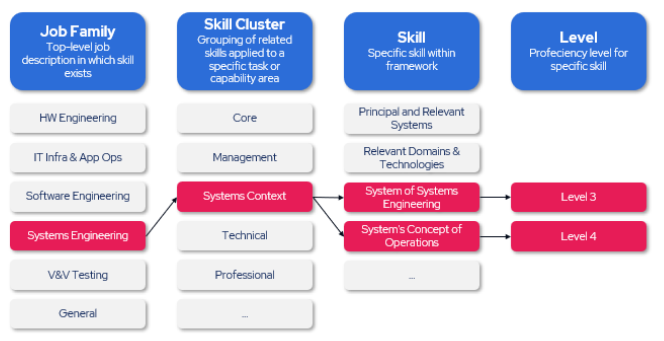

We're building a solution to better understand the skills and experiences of our personnel to better understand the capabilities we're bringing to market. This survey helps us understand the full range of capabilities across our team and improve our staffing.
To start, please confirm your employee ID and primary job family within Cubic.
This survey will provide you with a series of windows in which you can highlight your level of proficiency in 5 skills for 3 different skill types (15 total skills).
Each skill exists within a broader Cluster, within a Job Family. A diagram of the structure is included, below:

Finally, proficiencies range from Level 1 to Level 5 based on the following matrix. Self reported skills will be reviewed with managers during performance management cycles going forward.
| Level Rating | Level Summary | Level Description | Example Signals |
|---|---|---|---|
| Level 1 | Awareness | Awareness in this area, but limited experience | Exposed to the skill through training or shadowing; can discuss basic concepts but has not applied skill independently |
| Level 2 | Supervised Practitioner | Knowledge of the skill, but requires guidance and supervision to perform tasks | Has applied skill in a limited or controlled setting with support from others |
| Level 3 | Practitioner | Deep understanding of the skill and can perform complex tasks independently | Regularly applies the skill independently on projects to high success |
| Level 4 | Lead Practitioner | Complete and comprehensive mastery of the skill and can lead, innovate, and train others | Serves as a go-to resource on skill, mentors others, sets best practices, and leads workstreams requiring skill |
| Level 5 | Industry Expert | Industry expert on topic | Recognized authority on skill, such as having published materials, presented externally, or defined standards |
A copy of the skills structure and the proficiency matrix will be included in the skills page for your reference, as needed.
Select up to 5 skills for each skill type below. You must complete at least 3 skill rows in total across all sections.
Select up to 5 competencies. Use the drop-down windows for each skill and then input your proficiency.
Select up to 5 SME skills. Use the drop-down windows for each skill and then input your proficiency.
Select up to 5 technical skills. Use the drop-down windows for each skill and then input your proficiency.
Skills type
Each skill exists within a broader Cluster, within a Job Family. A diagram of the structure is included, below:
Finally, proficiencies range from Level 1 to Level 5 based on the following matrix. Self reported skills will be reviewed with managers during performance management cycles going forward.
| Level Rating | Level Summary | Level Description | Example Signals |
|---|---|---|---|
| Level 1 | Awareness | Awareness in this area, but limited experience | Exposed to the skill through training or shadowing; can discuss basic concepts but has not applied skill independently |
| Level 2 | Supervised Practitioner | Knowledge of the skill, but requires guidance and supervision to perform tasks | Has applied skill in a limited or controlled setting with support from others |
| Level 3 | Practitioner | Deep understanding of the skill and can perform complex tasks independently | Regularly applies the skill independently on projects to high success |
| Level 4 | Lead Practitioner | Complete and comprehensive mastery of the skill and can lead, innovate, and train others | Serves as a go-to resource on skill, mentors others, sets best practices, and leads workstreams requiring skill |
| Level 5 | Industry Expert | Industry expert on topic | Recognized authority on skill, such as having published materials, presented externally, or defined standards |
Thank you for sharing some of your skills and capabilities. This information helps us to better understand the overall skill profile of Cubic and identify growth opportunities across the organization.